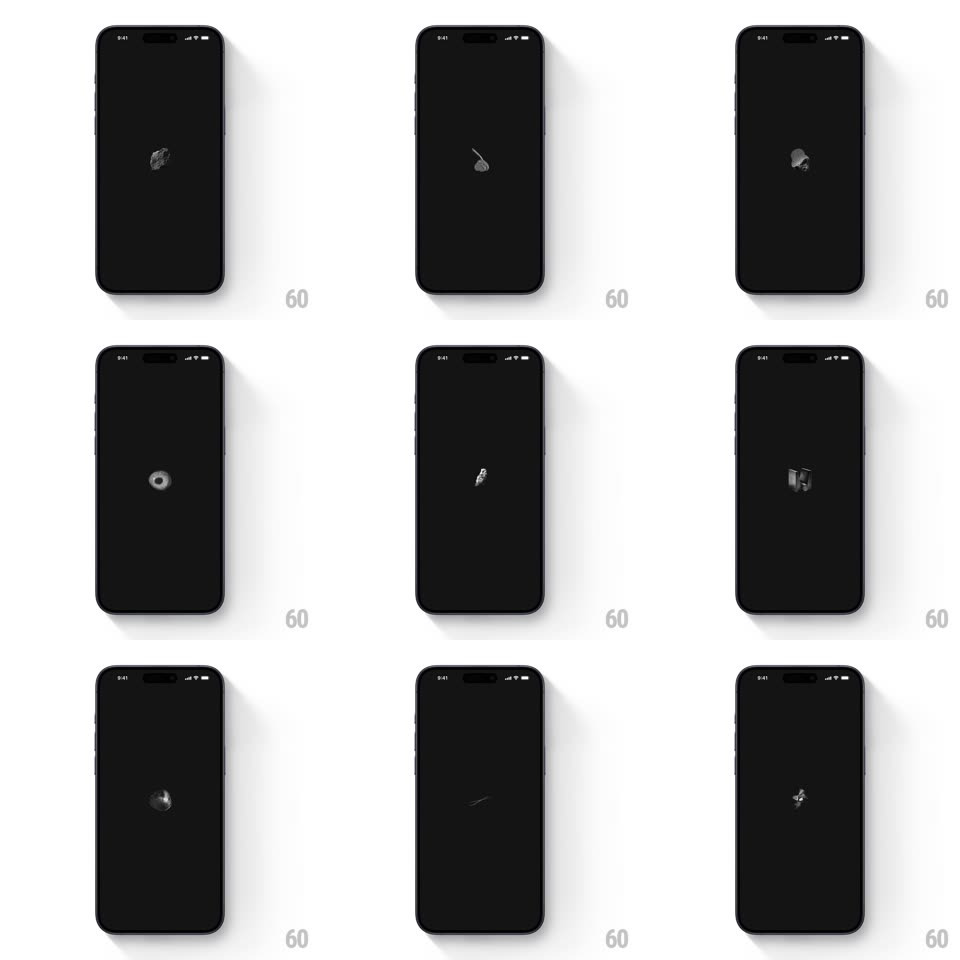

Media
Frame-by-frame

Rebuild this animation 1:1: Co-Star's launch loader - tiny hand-drawn mystical illustrations (moon, hand, eye, crystal, orb, comet) cycle frame-by-frame at the center of a black screen, flickering like a flipbook while the app loads.

Rebuild this animation 1:1: Co-Star's launch loader - tiny hand-drawn mystical illustrations (moon, hand, eye, crystal, orb, comet) cycle frame-by-frame at the center of a black screen, flickering like a flipbook while the app loads. ## Integration Integration: stack-agnostic spec - springs given as stiffness/damping, timed motions as duration + curve; map every value to your framework and animation library of choice. ## Scene Pure black screen, one small centered illustration at a time: crescent moon, palmistry hand, all-seeing eye, crystal ball, comet, Saturn-like orb - rough white-ink etching style, each ~40px. No text, no progress bar. ## Motion spec Pattern: frame-by-frame flipbook loader, indefinite. - Cycle: illustrations swap every 120-180ms (irregular cadence, not metronomic) with a hard cut - no crossfade. - Jitter: each frame sits at a slightly different position (+-3px) and rotation (+-4deg), like a hand-cranked animation. - Flicker: opacity dips randomly (1 -> 0.7 -> 1 within a frame) to mimic film grain. - Exit: when loading completes, the current frame holds, sharpens (jitter stops), then crossfades to the app (300ms). ## Calibration - The illustrations are etched line art - rough strokes, not clean vectors. - Cadence irregularity is the charm: vary the per-frame hold time. ## Reduced motion A single static illustration (the moon) holds until load completes. ## Don't miss - Every illustration is mystical/astrological - no generic spinner or logo. - The sequence never visibly repeats its order; shuffle the cycle.